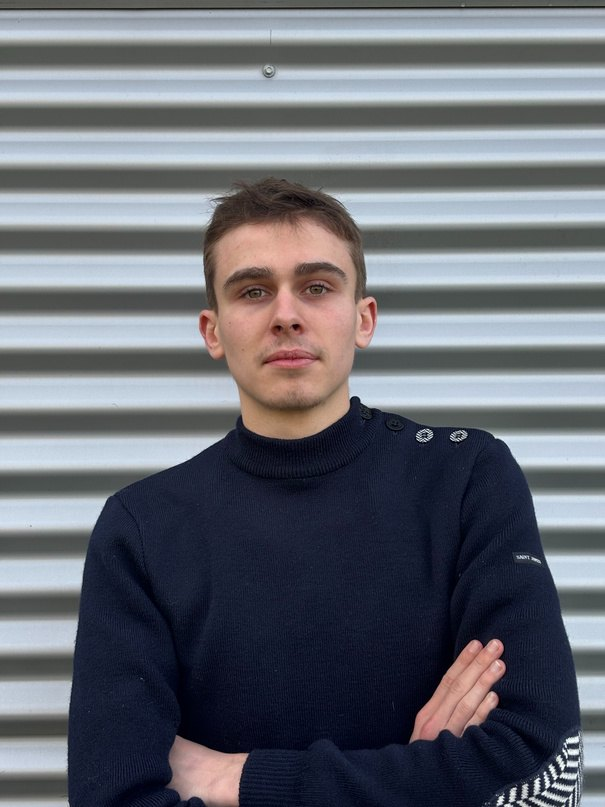

Raphaël Flipo
Sales Assistant and Marketing Manager

Second-year student on a BUT (University Bachelor of Technology) in Marketing and Sales, specialising in digital marketing, e-business and entrepreneurship, on a work-study programme at Florimond Deprez. I combine sales, communications and digital product development to address practical business needs.
Professional experience
Sales Assistant and Marketing Manager
Sep 2026 - presentGroupe Florimond Deprez · Capelle-en-Pévèle · Work-study programme
- Lead internal marketing projects and support B2B sales in the fodder beet and sugar beet sectors.
- Develop a CRM in Swift and C/C++; create photo and video content and prepare meetings and presentations.
Sales Representative and Communications and Marketing Director
Jun 2025 - Jun 2026Brasserie des Lys · Roubaix
- Developed and implemented the brewery’s sales, marketing and communications strategies.
- Prospected and sold to B2B and B2C customers through field sales and inside sales.
Sales Intern
Dec 2024 - Jan 2025Renault Roubaix · Car dealership
- Supported sales prospecting, welcomed customers and assisted with vehicle handovers.
Volunteering and leadership
Scout Troop Leader
Aug 2025 - presentScouts d’Europe and SUF · Volunteer
Lead a youth troop and coordinate a team of assistant leaders.
Education
Second-year BUT in Marketing and Sales · Work-study programme
2026 - 2027IUT de Roubaix, University of Lille · Digital marketing, e-business and entrepreneurship
Studies towards a BUT in Marketing and Sales
2024 - 2026Université Polytechnique Hauts-de-France · Sales, marketing and communications
French general baccalaureate
2024Lycée Ozanam, Lille · Economics and Social Sciences; Engineering Science
Digital projects
La Boussole
In developmentManagement software for associations, sports clubs and scout groups: memberships, events, carpooling and bookings. C++ · Qt 6 / QML · Firebase.
Jarvis
Personal projectPersonal AI agent designed to run locally on Mac using Ollama and MLX, with an interface inspired by liquid glass.
Skills and languages
- Sales and communications
- B2B/B2C prospecting · Marketing strategy · Social media · Photo and video · Team leadership
- Tools and development
- Office · Adobe Creative Cloud · Swift · C/C++ · Qt/QML · Firebase · Xcode · Visual Studio
- Languages
- French native · English C1 · Spanish A2
- Interests
- Tennis (French ranking 2/6) · Motorsport · Scouting · Computing and PC building